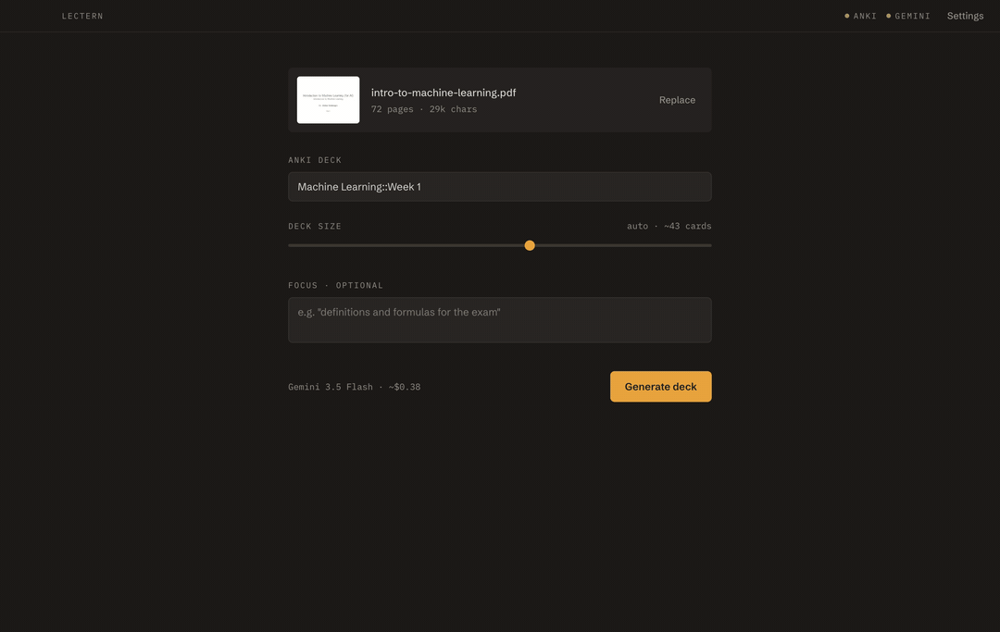
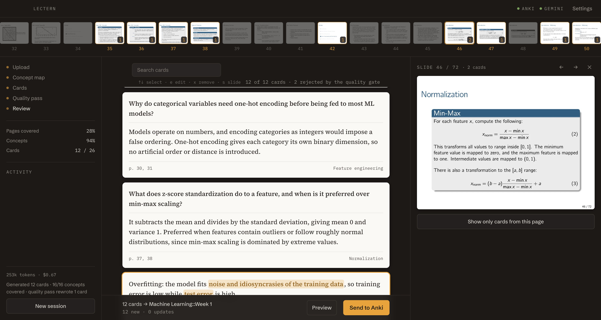

Free & open source · your own Gemini key
Lectern reads the whole lecture, maps its concepts, and generates cards that cite the exact pages they came from. You see what's covered, check any card against its slide, and send the deck straight to Anki.
macOS · Windows · Linux · no account, no subscription
your slides light up as cards cover them

Every card can back itself up
A chatbot will happily invent plausible flashcards. Lectern gates every card on provenance: which pages it came from, which concept it teaches, and a source excerpt to verify it against. Cards without support are rejected, and the log shows what was cut and why.
How does an overfit model differ from an underfit model in terms of training and test error?
Overfit: very low training error but high test error, from too much capacity or too little data. Underfit: high error on both, because the model is too simple to capture the underlying pattern.
One lecture in, one deck out
The pipeline runs entirely on your machine, with no backend and no account. Lectern talks only to the Gemini API, using your key from the OS keychain, and to your local Anki.
1 · map
Gemini builds a concept map of the whole document: objectives, concepts, and relations, page by page.
2 · generate
The model submits batches and steers by the coverage ledger until the gaps are closed.
3 · review
Edit, search, filter by page, and peek at the slide behind any card.
4 · send
One click via AnkiConnect. Re-running a lecture updates notes instead of duplicating them.

A ~10 MB desktop app
You need Anki with the AnkiConnect add-on and a free Gemini API key. A typical 70-page lecture costs between a few cents and about a dollar in Gemini usage. Lectern itself is free.
macOS (Apple Silicon & Intel) · Windows · Linux · MIT-licensed
or on macOS: brew install --cask stegra05/tap/lectern